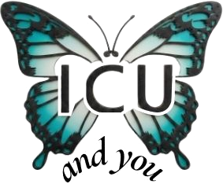

Intensive Care Education
A comprehensive intensive care education programme, a topic at a time — Coffs Harbour Health Campus
New here? About this site · Subscribe to the weekly newsletter · You asked · Your suggestions · Contact me
This site supports organ donation registration — register your decision.
This week
Puberty to eighteen. An adult body, and not an adult — and almost every error in this age group comes from applying one of those and quietly forgetting the other. The physiology has finished arguing; what has not is who may consent, who may be told, and what they will admit to with a parent in the room.
Ten points, five minutes, nothing decorative. An adult body with a child's legal status, capacity that turns on maturity rather than a birthday, deliberate self-harm as 7.2% of Australian ICU admissions in this age band, the serogroup B gap, and the dosing rule that is a myth.
Four stations rather than six, and deliberately shorter than the last one. What has changed, what brings them in, what hides, and the part that outlasts the admission.
“With teenagers, never say they are non-compliant.” A word that is a verdict wearing the clothes of an observation — it describes the behaviour accurately and explains it wrongly, and the explanation is what follows the patient through the record for years. Yes, no, maybe.
Nicole Glaser on PedsCrit. Hyperosmolar DKA does badly on the standard DKA pathway — because somebody put it on the pathway. Why the fluid has to go in before the insulin, why these children get less cerebral oedema rather than more, and the single thread running through the malpractice cases.
37,320 adolescent intensive care admissions across eight years of UK audit data. At fifteen, three in four are in a children's unit; at sixteen, three in four are in an adult one. What actually decides where they go, the two mortality figures that will be misquoted, and the question a regional Australian hospital cannot ask because it has no choice.
A new column. The London Foundling Hospital took children in by lottery drawn in public, renamed them after its donors, publicly denied teaching them to write, and then at fourteen bound them out to a master and stopped. Of fifty-three apprenticed in 1805, fewer than half were doing well and more than a quarter had run away. The same transition problem as this fortnight's journal club, 270 years earlier.
Twenty clues from the fortnight — consent and capacity, the front-of-neck membrane whose size matters more than any birthday, the serogroup the school dose misses, a sea captain, and the Australian vaccine that may eliminate a cancer. Fill it in on screen, or print it.
A new column. The cervical cancer vaccine did not begin in a laboratory. It began in a Melbourne clinic in the early 1980s, with a physician noticing that a group of his patients could not get rid of their warts, and a cytologist who asked him what that might mean in women. Ian Frazer worked as a clinician for twenty years. Jian Zhou, who suggested the step that made the particle assemble, died in 1999 aged forty-two, seven years before the vaccine was approved.
An adult body, and not an adult — which is the trap the word is named for. Five things: adult doses with no pubertal switch, admissions that are decisions rather than failures of character, seeing them without the parent in the room, a law that differs by country and by state, and the transition to adult services where a chronic disease comes off the rails.
Five questions on the adolescent — why the fluid goes in before the glucose comes down, the membrane that may not take the tube you brought, what to say before they tell you anything, the serogroup the school dose misses, and what belongs in the notes. Open book, and three right earns a certificate.
Three tiers, so you can read only the one you need. The physiology of a body that finished before the brain did, the consultation nobody teaches you to have, and what you will be expected to do — including several things taught the other way round in perfectly good medical schools.
Each week is one subject taken several different ways. Click a subject to open it.
Nothing matches that.
Two emails a week. The Friday newsletter, for all subscribers, telling you what is new and why it mattered — and, for clinical subscribers, a second on Tuesday with the new mind map and puzzles the moment they go up, before anyone else sees them. Occasional announcements of new features as they arrive. I ask a question most weeks, and the best answers get published. Subscribers also get The Top Ten a few days before it appears here, and original feature stories, news and views. It is free, and you can leave whenever you like.
Already subscribed? Every email has an unsubscribe link at the foot.
Is there a subject you think deserves a full week? A paper or a guideline worth a journal club? A podcast episode the rest of us should hear? A question you would like put to everybody?
I read all of them, and I would rather have a suggestion I cannot use than not have it. Several of the series on this site began as somebody else's idea.
Send me a suggestionSomething not displaying properly, or a page that will not load — tell me. And if you would like to use any of this with your own team, that is welcome too; just say so and I will help.
ICU AND YOU is a weekly teaching programme written in a regional intensive care unit at Coffs Harbour Health Campus, on the mid north coast of New South Wales. It has run since 2023. Each week takes one subject and comes at it several different ways — a mind map of the territory, an aphorism worth arguing with, a crossword, a mnemonic for three in the morning, and whatever else the subject seems to want.
It is written for the people who actually do the work: nurses, registrars, students, and anyone else who finds it useful. Everything is free, and you are welcome to use it with your own team — more about the programme, and about me.
A note on what this is. This is teaching material — discussion, argument and memory aids. It is not a clinical guideline and not a protocol.
While I make every effort to verify each fact and claim, to cite the source it came from, and to correct anything found to be wrong, medicine moves and errors are possible. Doses, thresholds and recommendations change. Nothing here overrides your local policy, current national guidance, or the specialist service you would ordinarily call: check everything against your own formulary and protocols before you act on it. Where something is contested or the evidence is weak, I try to say so — that is usually the interesting part.
Nothing here should be acted on without independent confirmation from a current, authoritative source, and senior advice where the situation warrants it. This site is offered freely and in good faith as education. The responsibility for any clinical decision rests entirely with the clinician making it.
Material from other sources is summarised in our own words and linked to the original rather than reproduced. If you think something here is wrongly attributed or ought not to be, please tell me and I will fix it.
Scan the code, or go to donatelife.gov.au.